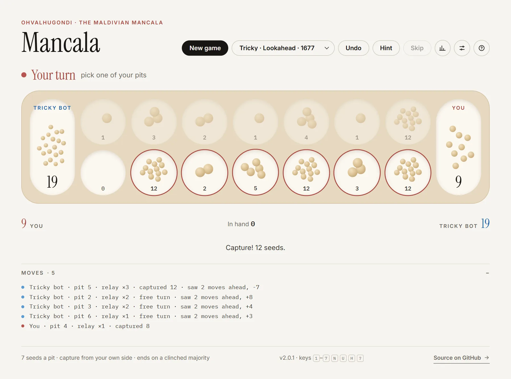
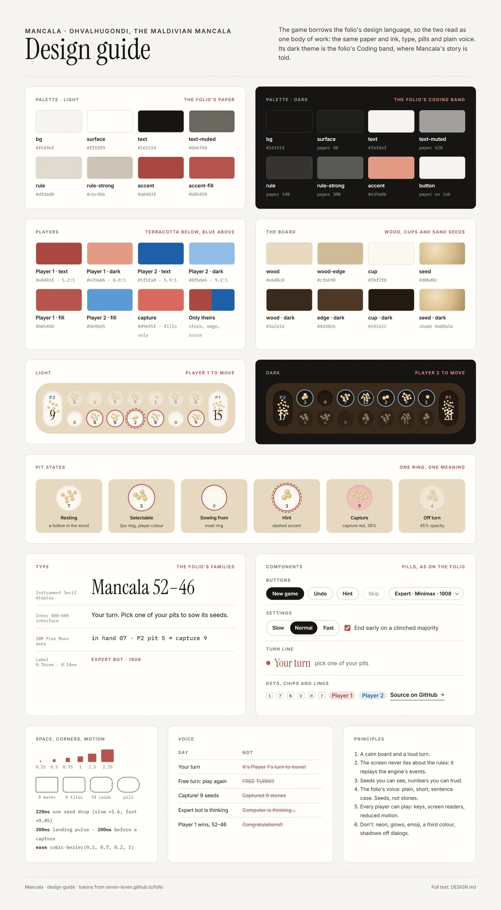

Dec 2022 to now · A game and its bots · Python, then TypeScript
Losing at ohvalhugondi
A bot to beat my grandmother, four years in the making
Ohvalhugondi is the Maldivian mancala: two rows of seven pits, seven seeds in each. My grandmother kept beating me at it, so in 2022 I set out to write a program that could beat her. It became a command-line game, then a search bot, then a web game with eight bots, and finally a way to find out how the game itself works.
- Started
- December 2022
- Written in
- Python, then TypeScript
- Status
- In use, version 2.1
- Bots
- Eight, Hopeless to Expert
The itch
In December 2022 I played my grandmother at ohvalhugondi again, and lost again. I decided to write a bot that could beat her. I got as far as the game itself: a Python command-line version with the real rules, seven pits a side, seven seeds in each, and relay sowing.
The bot would have to wait. I didn't yet know how to make a program look ahead, and my grandmother passed away before I managed it.
What it does
You pick up every seed in one of your pits and sow them one by one around the board, into your own store but never your opponent's. If the last seed lands in a pit that already had seeds, you pick those up too and keep going: relay sowing, the part that makes ohvalhugondi so hard to read ahead. A last seed in your own store earns another turn, and one in an empty pit on your side captures the pit opposite.
Today it's a web game. You can play a friend on the same screen or any of eight bots, from one that tries to lose to one that searches ahead, and it keeps an Elo rating of your own from the games you play against them. There's undo, a hint, a replay of the finished game, and a move log where the search bots say what they saw.


How it works
The 2024 bot
Twenty months after that game I came back to it, because I had finally learned the missing piece: depth-first search, which I picked up playing The Farmer Was Replaced, a game where you program a farming drone in Python and have to solve its mazes. I worked out how to use it here myself, without AI help, and built the bot in Google Colab.
It follows its own chains of free turns as deep as they go and keeps the one that ends with the fullest store. Today, in TypeScript, it is nine lines:
chain(state, move, depth, me) {
const r = playTurn(state, move);
if (!r.freeTurn || depth + 1 >= maxDepth) return score(r.state, me);
let best = score(r.state, me);
for (const next of validMoves(r.state)) {
best = Math.max(best, chain(r.state, next, depth + 1, me));
}
return best;
}
It never thinks about the opponent's reply, and it is still the second-strongest bot in the game.
The web game
The first web version came together in a single day in August 2025, with AI's help on the interface, and was split into tidy modules the same day. In July 2026 the rules moved into one place: the engine writes down every seed it sows, and the animation only replays that record, so the screen can never disagree with the rules.
In October 2026 I rebuilt it in TypeScript, again with AI's help. It got tests for every rule, an alpha-beta search that runs in the background so the page never freezes, and a design taken from this site: the same paper and ink, the same type, a wooden board with drawn seeds. Testing the new version, I caught a rule the game had got wrong since its first day. A capture should take only the pit opposite, while the seed that lands stays where it is.

What the bots found
With eight bots, the game could finally be measured. Two results stood out.
The first move decides it
With the standard rules, the strongest bot proves that whoever moves first wins by force. Opening with pit 1 starts a chain of free turns that passes half the seeds before the other side ever moves. The strongest bot playing itself ends 94–4. The game now lets you choose who goes first.
A ladder, not exact numbers
Every bot played every other 40 times, and the results were fitted to Elo ratings. Many pairings end 100–0, which says one bot is much stronger but not by how much, so each rating comes with a range.
- Expert Minimax1908
- Hard DFS, the 2024 bot1838
- Tricky Lookahead1677
- Average Greedy1383
- Casual First pit1097
- Easy Random1000
- Very easy Generous609
- Hopeless Pushover556
The ladder holds a few surprises. The 2024 bot, which never considers its opponent, is nearly as strong as a full search. A bot that always plays its leftmost pit beats one that plays at random three times in four. And at the bottom sit two that play worse than chance: one that banks as little as it can, and one that searches ahead to lose by as much as it can.
What I learned
The first time I set out to solve a problem that was genuinely hard for me, and did.
It's the project I'm proudest of. The idea for the bot came from a game about programming a farm, the bot I wrote in 2024 still holds up against a proper search, and measuring the bots showed me the game better than playing it: ohvalhugondi looks like a game of patience and plays like a game of chains, where one well-chosen pit decides everything.